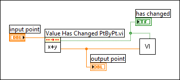

Using the initialize parameter, you can reset the internal state of Point By Point VIs without interrupting the continuous flow of data or computation. You can reset a VI in response to events such as the following:
For example, the Value Has Changed PtByPt VI can respond to change events such as the following:
The following block diagram shows the Value Has Changed PtByPt VI triggering initialization in another VI and transferring data to that VI. In this case, the input data is a parameter value for the target VI.

Many point-by-point applications do not require use of the initialize parameter because initialization occurs automatically whenever an operator quits an application and then starts again.
Error codes usually identify invalid parameters and settings. For higher-level error checking, configure the program to monitor and respond to irregularities in data acquisition or in computation. For example, you create a form of error checking when you range check data.
A Point By Point VI generates an error code once at the initial call to the VI or at the first call to the VI after you initialize an application. Because Point By Point VIs generate error codes only once, they can perform optimally in a real-time, deterministic application.
The Point By Point VIs generate an error code to inform you of any invalid parameters or settings when they detect an error during the first call. In subsequent calls, the Point By Point VIs set the error code to zero and continue running, generating no error codes. You can program an application to take one of the following actions in response to the first error:
You can use the Value Has Changed PtByPt VI to build a point-by-point error checking mechanism for Point by Point VIs that have an error parameter.